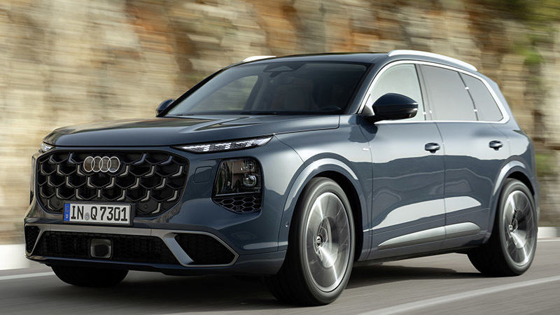

Desde Junio ya han anunciado los nuevos coches estilo "SUV" de las 3 marcas alemanas mas conocidas;BMW ,Audi y
Mercedes.
BMW X5
El nuevo BMW X5 es el que presenta el mayor cambio de todos.
Se presenta con un nuevo estilo totalmente diferente con una parrillera muy innovadora y un estilo interior
bastante cambiado sustituyendo la antigua pantalla curved display a una Panoramic Idrive.
Respecto a especificaciones en potencia cuente con 20 caballos mas que el modelo anterior y 100kg mas de
peso que deja la aceleración en 5.4/100km
Audi Q7

El nuevo Audi Q7 no ha recibido ninguna mejora estetica notable pero adentrandonos en el motor observamos un
cambio absolutamente radical y loco.
Con estos nuevos cambios salen mas versiones de motor desde el Q7 45TDI con 231 CV al Q7 60TSFI e con 500CV
convertiendo un SUV familiar no competitivo en uno de los mas rapidos hasta la fecha.
Mercedes GLE
Para algunos una decepción otro año mas sin presentar mejoras notables desde 2019.
Este GLE 2027 se presenta con el mismo diseño manteniendo los 367CV.
El unico que presenta una mejora un poco notable es el 350 e que posee 450 caballos combinados que teniendo
en cuenta el precio no saldria tan rentable como los dos anteriores